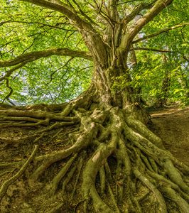

When it comes to the beauty, sustainability, and health of our environment, trees play a vital role. They provide shade, improve air quality, and create a sense of tranquility in both urban and rural settings. In Smithville, a picturesque town in southern New Jersey, the value of trees is truly cherished. One key aspect of maintaining the town’s natural beauty is Smithville tree service provided by experienced professionals dedicated to preserving trees and ensuring their longevity. In this article, we will delve into the significance of tree service and shed light on the crucial role of root health.
Smithville Tree Service: A Friend to Nature
Professional Smithville tree service stands as a prominent guardian of the town’s trees. Comprising a team of arborists, horticulturists, and tree care experts, tree experts are committed to a comprehensive range of services aimed at the well-being of trees throughout the town. From tree pruning and removal to disease diagnosis and pest management, tree services cover every aspect of tree care. Quality tree companies do so with a deep understanding of ecological balance and sustainability.
With their extensive knowledge of local tree species, soil conditions, and climate factors, tree companies in Smithville are well-equipped to address the unique needs of each tree. This not only enhances the town’s visual appeal but also contributes to the overall health of the ecosystem. A thriving tree population brings forth many benefits. Improved air quality, reduced soil erosion, and enhanced habitat for various wildlife species are just a few.
Root Health: The Foundation of Tree Vitality
While the crown of a tree may catch the eye with its lush foliage and vibrant colors, the true key to a tree’s vitality lies beneath the surface: its roots. Just as a strong foundation is crucial for the stability of a building, healthy roots are essential for the stability and longevity of a tree. The roots serve multiple functions, including nutrient absorption, water uptake, and anchoring the tree securely in the soil.
Maintaining root health is of paramount importance, and this is where tree care experts truly excel. They understand that factors like soil compaction, improper drainage, and root diseases can hinder root growth and vitality. By implementing different techniques Smithville tree service experts ensure that the trees’ root systems have the best conditions to thrive. A few ways they do this are with deep root fertilization, aeration, and soil amendment,
The Relationship Between Smithville Tree Service and Root Health

The harmonious relationship between Smithville tree service and root health is undeniable. Arborists and experts recognize that a holistic approach to tree care involves a deep understanding of the interconnectedness between various tree components. By promoting root health, they enable trees to withstand environmental stressors, resist diseases, and grow with vitality. Through regular tree inspections, tree care professionals can identify early signs of root issues. Early intervention is crucial in preventing any further damage. The commitment to ongoing education and research also allows experts to employ the latest advancements in root care techniques. Thereby, professionals like Ben Bivins Tree Experts can offer the best possible service to the town and its trees.
Final Thoughts on Smithville Tree Service and Root Health
Professional tree service stands as a guardian of the town’s green legacy. Tree care experts show their dedication to preserving the town’s natural beauty by caring for trees. Combine this with their understanding of root health’s crucial role and you can ensure that the trees of Smithville continue to thrive for generations to come. As we admire the majestic trees that grace our streets, parks, and gardens, let us not forget the hidden world beneath—the intricate root systems that sustain and nourish these living giants. By supporting the trees in your yard with expert care, you are advocating for root health. This